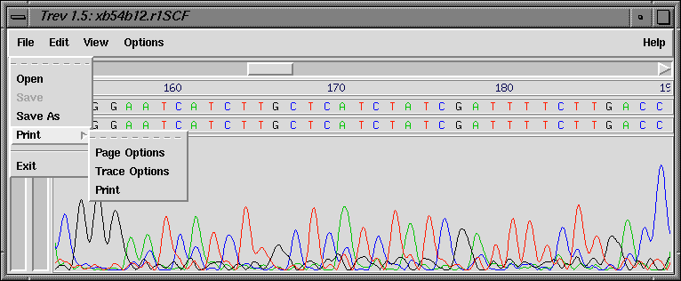
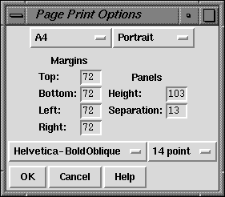
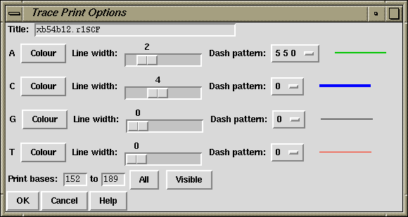

The Print option is available via the File menu, as shown below.

It produces a PostScript file which you must then send to the printer yourself.
All sizes given in the dialogues explained below should be in PostScript points (72pt = 1inch).
Defaults and available options are specified in the file tk_utilsrc. These can be changed by copying the relevant line from tk_utilsrc into a file called .tk_utilsrc in your home or working directory, and then altering the settings as desired.
Note that it is not yet possible to include the histogram of confidence values in the postscript output.

Currently available page sizes:
Please note that the page size and orientation options do not determine the paper format that your printer will use. This must be set externally to trev.
Traces are printed width-ways across the page. When the right-hand margin of the page is reached, printing continues below the current section and from the left-hand side. A 'panel' is one page-width's worth of trace (minus margins).
The trace and the sequence and sequence number information are printed entirely within the given height of the panel, and the separation gives the amount of space that is left between panels. Thus they, together with the page height and top and bottom margins, determine how many panels will be printed per page.
All fonts listed should be available to most PostScript printers. Most printers will default to Courier if a selected font is not recognised.

The title is printed in the top left hand corner of every page. The default is the name of the trace file.
The defaults are those used by the trev display. The colours shown in the selection dialogue may not correspond exactly to those printed, depending on the capabilities of your printer. Different colours will usually be printed using grey-scales on black and white printers.
Dash pattern is in PostScript dash format:
dash_1 gap_1... dash_n gap_n offset
'dash_n' and 'gap_n' are the lengths of dashes and the gaps between them. The dash pattern starts at dash_1, continues to gap_n, then starts again at dash_1, until the whole line has been drawn. If n = 0, i.e. no values are given for 'dash' and 'gap', the result is a normal unbroken line. Offset must be given, and is the distance into the dash pattern at which the pattern should be started. The dash pattern is not demonstrated by the example line on the ps_trace_setup dialogue.
Allows a subsection of the trace to be printed.
The 'Visible' button sets the region to that currently displayed in the main trev window. If the display is altered, the print base settings will not change unless 'Visible' is pressed again. The whole sequence is printed if the start position is greater than the end position. The OK button will not work if the start or end positions given are outside the range of the sequence.
The X and Y scales are taken from the trev display, and cannot be set independently for PostScript output.
The segment of output displayed below indicates the effects of the settings given in the example dialogue screendumps shown above. NB: the page has been clipped to save space. The section shown is the top part of an A4 page.
![[picture]](trace_print_trace1.png)